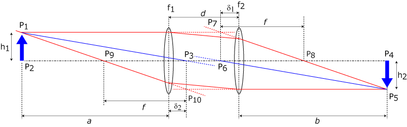
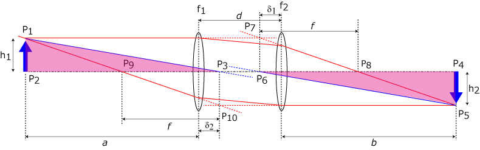
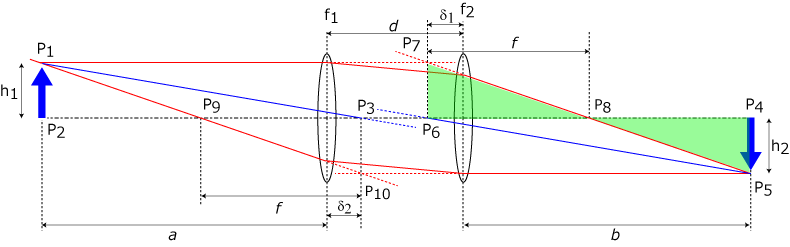
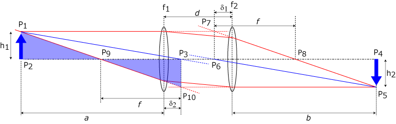

レンズの中心を通る光線の関係

左側の像の先端，P1，から主点，P3，に向かう線と，右側の結像の先端，P5，から主点，P6，に向かう線は平行っぽいですね．
これを証明していきましょう．
そのためには，△P1P2P3と△P4P5P6の相似関係を示せばいいので，

\(\Large \displaystyle \frac{h_1}{a + \delta_2} = \frac{h_2}{b + \delta_1} \)
であることを証明すればよいわけです． △P4P5P8と△P6P7P8の関係から，

\(\Large \displaystyle \frac{h_1}{f} = \frac{h_2}{b + \delta_1 - f } \)
△P1P2P9と△P10P3P9の関係から，

\(\Large \displaystyle \frac{h_1}{a + \delta_2 - f} = \frac{h_2}{ f } \)
を得ることができます．ここで，ｆ，を消去すると，
\(\Large \displaystyle h_1 (b + \delta_1 - f) = h_2 f \)
\(\Large \displaystyle h_1 (b + \delta_1 ) = (h_1 + h_2) f \)
\(\Large \displaystyle h_1 f = h_2 (a + \delta_2 - f) \)
\(\Large \displaystyle (h_1 + h_2) f = h_2 (a + \delta_2 ) \)
となるので，
\(\Large \displaystyle h_1 (b + \delta_1 ) = h_2 (a + \delta_2 ) \)
\(\Large \displaystyle \frac{h_1}{a + \delta_2} = \frac{h_2}{b + \delta_1 } \)
を満たすことができたので，二つの線（図の中の青い線）は，平行であることがわかります．
では，次にレンズの公式，倍率を求めていきましょう．